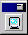

Next: Otros elementos
Up: StarDesktop: El Entorno de
Previous: La ventana del desktop
Índice General
StarOffice puede aparecer en pantalla de varios modos distintos:
- Si en el menú Ver se marca la opción Escritorio integrado, el programa
ocupará toda la pantalla y desaparecerán el marco de su ventana, la barra de
título, así como la barra de tareas de KDE (o GNOME).
- Si en el menú Ver se marca la opción Pantalla completa, desaparecerán
casi todos los elementos de la ventana principal, y sólo se verá la
ventana del documento. Quedarán la barra de tareas de StarOffice y un
icono (figura 5.3) que
permite volver al modo anterior. En esta situación no se puede acceder
al menú principal con el ratón, pero sí se pueden usar los atajos de
teclado y el menú de contexto.
Figura 5.3:
Botón para volver del estado de Pantalla Completa
|

|
Proyecto Cursos - LuCAS - http://lucas.hispalinux.es/htmls/cursos.html